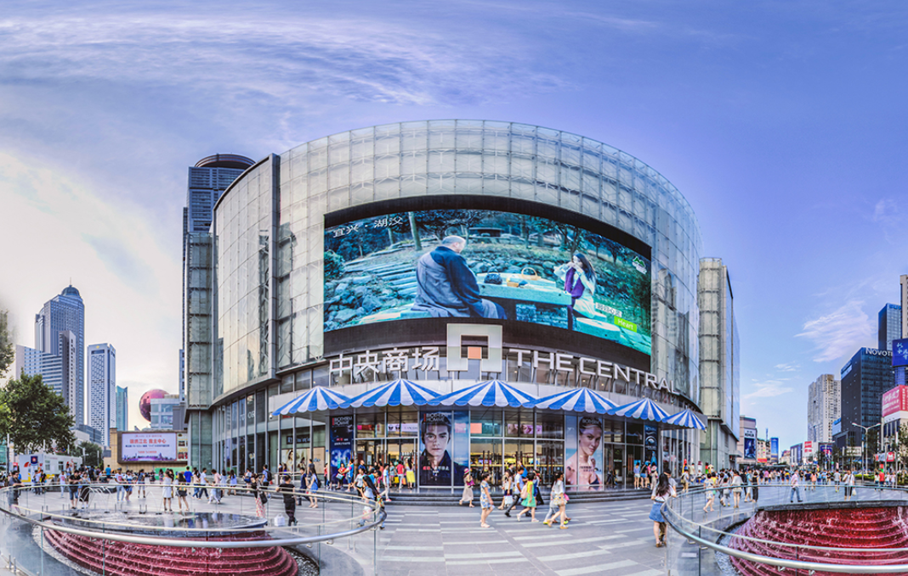

德基广场
德基广场位于新街口中山路18号，是南京高端商业的标杆项目，分为一期（2006年开业）和二期（2012年开业），总建筑面积约26万平方米。商场以“奢侈品+高端生活”为定位，汇聚了LV、Gucci、Prada、Hermès等超150个国际一线品牌，其中多个品牌为江苏首店或南京首店。
除商业零售外，德基广场还注重文化与体验感：负一楼“德基艺术空间”定期举办当代艺术展览；7-8楼聚集了米其林餐厅、黑珍珠餐厅等高端餐饮；“网红洗手间”因风格多样（赛博朋克风、欧式复古风等）成为打卡点，进一步提升了商场的话题度和客流量。
地址：南京市玄武区中山路18号
营业时间：10:00-22:00（周末无延长）
定位：国际奢侈品购物中心
特色：艺术展览、高端餐饮、网红洗手间
南京中央商场
南京中央商场始建于1936年，前身为“中央商场股份有限公司”，是南京历史最悠久的大型综合性商场之一，见证了新街口商圈近百年的发展。商场总建筑面积约10万平方米，以“亲民、时尚、全龄化”为定位，覆盖服饰、美妆、家电、儿童游乐、餐饮等全业态，是本地市民日常消费的首选场所。
作为“老字号”商场，中央商场在保留传统优势的同时不断创新：定期举办“老南京文化展”“惠民促销节”等活动；引入年轻潮流品牌吸引Z世代客群；负一楼“美食广场”汇集南京小吃与连锁餐饮，性价比高，成为周边上班族和学生的热门选择。

地址：南京市秦淮区中山南路79号
营业时间：9:30-21:30（周五至周日延至22:00）
定位：综合性大众购物中心
特色：历史底蕴、惠民活动、高性价比餐饮